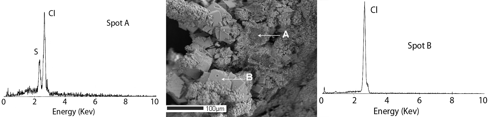
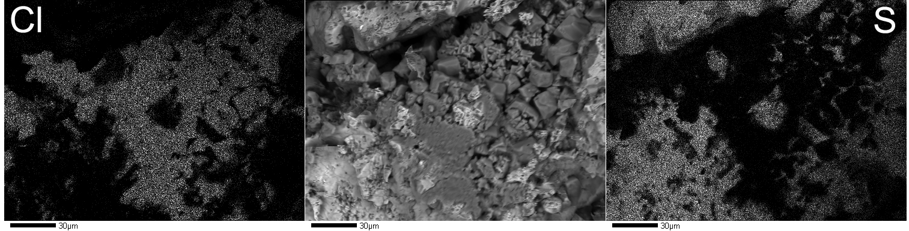

Electrons
emitted
from a tungsten or
lanthanum-hexaboride filament in a vacuum column are accelerated
through a high
potential difference of 10-25 KV, so the energy gained or lost by
the
charge/electric field system is 10-25 keV. The resulting beam is
focused to a
spot of approximately 1 µm in diameter (i.e., ~1/100th
the thickness
of a human hair). The electron
beam is then either rastered
over the sample at varying magnifications to visualize
sample-surface
morphology and compositional variation or focused on a single spot
to
generate
X-rays from within the sample. The
affected volume is teardrop shaped. The
depth
and effective cross-sectional area of the affected
volume varies, depending on the accelerating voltage of the beam
and
the
density of the sample. The
affected volume is usually less than 10 µm3, making it
one of the
smallest analytical volumes that can be quantitatively measured. Generally, the volume affected by the
X-rays increases with increased accelerating voltage, and
decreases
with
increasing sample density.
The interaction of the electron beam with the sample's crystal lattice (internal arrangement of atoms) generates several phenomena that may be used to characterize the sample. Inelastic scattering occurs when the electron beam collides with outer shell electrons in the sample's lattice. Deceleration of the electron beam transfers enough energy to the sample lattice to knock some of the inner shell electrons to higher energy levels within the sample. When the electrons cascade back down to the inner shells of the atoms the sample will emit characteristic radiation (i.e., energy) that is unique to each element in the sample. This is similar to the way characteristic radiation is generated for X-ray diffraction, except the mineral is the target, instead of the copper anode used an X-ray tube. These secondary electrons are also scattered out of the sample, which have energies on the order of 50 eV and are much less than characteristic energies. A magnetic field can be used to attract them to a secondary-electron detector that is usually mounted at the back of the sample chamber. Although secondary electrons are generated throughout the affected volume, only those generated at or near the surface escape the sample. Thus, secondary electrons are employed to visualize the details of surface morphology as seen in the center micrograph below.

Elastic
scattering occurs when the electron beam is deflected by
positively
charged
atomic nuclei in the sample lattice, with some energy loss through
heat
dissipation and grounding. The
deflections cause relatively minor energy losses to the scattering
electrons,
but some of the beam can be scattered back out of the sample. These backscattered
electrons
have high kinetic energy and are relatively
unaffected by magnetic fields in the electron microprobe.
They are usually detected by a
solid-state backscattered electron detector mounted coaxially with
the
electron
optical system immediately above the sample.
The
number
backscattered electrons increases with the
increasing average atomic number (analogous to density) of the
sample. Backscattered electrons are
employed to
visualize compositional variations within a sample, and zonation
within
individual phases.
As
noted above, a fraction of the electron beam collides with inner
shell
electrons in the atoms of the sample lattice with sufficient
energy to
eject
these electrons to higher orbitals and raise the atoms to an
excited or
ionized
state. Electrons from the outer
electron
shells cascade down to fill the inner shell vacancies, releasing a
discrete
amount of energy, usually in the form of an X-ray photon, i.e., a
packet of
X-ray energy. Each element has a
unique electron configuration, so the X-rays emitted are
characteristic
of the
atoms in the sample. The amount of
energy released and the ability to detect that energy is related
to an
element’s atomic mass. Lighter
elements such as H, C, and N are consequently difficult to detect. Most electron microprobes are equipped
with two types of X-ray spectrometers and corresponding detectors:
(1) energy dispersive spectrometers (EDS)
and (2) wavelength dispersive
spectrometers (WDS). EDS
detectors are solid-state detectors
that are sensitive to a wide range of X-ray energies.
Most microprobes are equipped with SiLi EDS detectors. These are silicone semi-conductors with
lithium drifted through them to
compensate for
minor amounts of contaminants in the silicon.
These
detectors
must be cooled with liquid nitrogen to
enhance their performance and prevent the migration of the lithium
out
of the
crystal sensor. When an X-ray photon strikes the detector, it
generates
an
output signal that is proportional to the energy of the X-ray
photon. A multi-channel
analyzer sorts output signals into different energy ranges,
and
plots a
histogram of the X-ray energies detected over time (See above
figure). Most EDS detectors have a Be
(beryllium)
window that is strong enough to withstand the pressure change when
the
vacuum
column is vented to the atmosphere.
The window protects the detector by maintaining the chamber
vacuum, but
it also absorbs X-rays from elements lighter than Na so light
elements
cannot
be detected. Some EDS detectors
are equipped with thinner windows or are windowless by continuous
chamber
evacuation strategies. These
detectors can detect X-rays emitted by light elements. EDS spectra
provide a
rapid way to qualitatively identify the elements present in a
sample. An X-ray
spectrum, i.e., an energy distribution graph, can be
acquired in
just a few
seconds, and with a little experience, the analyst can quickly
identify
the
different phases present in a sample.
Newer electron probes are equipped with silicon drift
detectors
(SDD),
which are photodiodes. These are
similar to EDS detectors but do not require liquid nitrogen for
cooling, but
use reverse electronic bias to thermally cool the sensor, thus
they can
process
at much higher count rates, which makes them capable of detecting
light
elements.
WDS
detectors contain an X-ray proportional counter and a diffracting
crystal of
known d-spacing, i.e., the spacing between atomic planes.
The counter and crystal are moved along
the circumference of a goniometer focusing circle to satisfy
Bragg’s
law for the
X-ray of interest. Unlike an EDS
detector, a WDS detector is only tuned to one element at a time. Most microprobe spectrometers contain 2
or 4 diffracting crystals and are configured so that most of the
X-ray
spectrum
can be detected.
Each
X-ray detector chosen for a project has strengths and weaknesses
that
must be
considered in order to determine which detector best satisfies the
requirements
of the project. EDS detectors are
fast, relatively inexpensive, easy to maintain, and can detect and
measure
X-rays from rough surfaces, but they have several disadvantages. Since the EDS detector looks at a wide
range of the X-ray spectrum simultaneously, the background signal
is
fairly
high, and it cannot detect concentrations below about 0.5 weight
percent (5000
ppm). EDS detectors also have
relatively poorer energy resolution than a dedicated wavelength
energy
detector. Many elements have such
similar characteristic X-ray energies that the EDS detector cannot
distinguish
between them. For example, the
emission
energy of the S Kα peak is 2.308 keV and of the Pb Mα peak
is
2.346 keV. A peak in this energy
range
could
indicate the presence of elemental sulfur, elemental lead, or PbS,
which is the
mineral galena. This is a
particularly important concern if peaks are mis-identified by
automated
vendor-supplied software. EDS
detectors also generate several artifacts that must be considered
when
interpreting EDS spectra. Escape
peaks occur when the SiLi detector absorbs an X-ray photon and
emits a
Si
photon. The output X-ray will
generate a small peak with an energy of 1.74 keV lower than the
original X-ray
photon. This can also result in
the presence of a small spurious silicon peak when, in fact, no
silicon
is
present. Overlapping peaks result
when two different X-ray photons arrive at the detector so close
together that
the detector cannot distinguish them.
The result is a peak with energy that is the sum of the two
contributing
photons, and can indicate the presence of elements that aren’t
present
in the
sample.
WDS
spectrometers are large and mechanically complicated.
However, they have much better energy resolution than EDS
detectors and can usually distinguish most peak overlap that
plagues
EDS
detectors. WDS detectors only
sample a narrow portion of the X-ray spectrum at a time, so they
have a
much
lower background signal and in some cases can detect elemental
concentrations as
low as 100 ppm. Since WDS
detectors only look at one element at a time, the analyses of
multiple
elements
must be done sequentially and therefore take longer.
An example of mapping a particular element of interest with
a WDS detector is shown in the figure below.
The
center figure shows tiny salammoniac crystals covered with sulfur.
The adjacent WDS maps (X-ray maps) to
the left and right of this figure show the location of Cl and S in
the
minerals. WDS detectors are also
much less forgiving of fragile-mineral samples like hydrous clays
and
salts. Optimum quantitative
analyses require samples that are flat and polished.
Fragile materials like clay minerals may not
survive the rigors necessary to produce a polished section for
optimum
analytical results.
